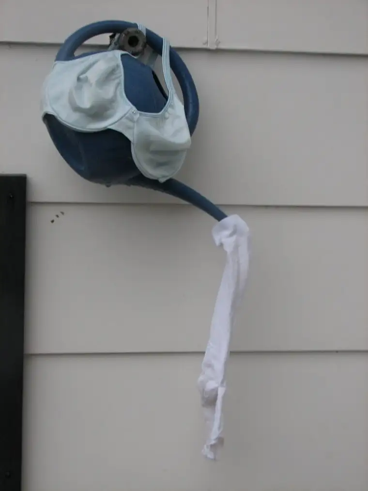

{kind=link}
I don’t know exactly how the bra thing started, but …to me, it’s a symbol of womanhood, of seizing the moment, of celebrating life and not taking it too seriously. A lot of our zaniness began around the time a friend of ours was dying of cancer. Especially after her death, we started celebrating birthdays like there was no tomorrow, because we knew that might be the case, as it had been for our friend. Birthdays began to mean something very important to us all after we lost one of our own, and although the bra thing had begun before then, it picked up steam afterwards. … I thought I would dread the day the bras showed up at my home, but the opposite was true. I felt honored. … Definitely something that wouldn’t work well in a smaller crowd, but there is power in numbers, and I do think life should be celebrated.
With that, I will return to the business of writing about parenting. Look for my next parenting column in this week’s issue (Tuesday edition in the newly revamped LIFE, formerly Valley R&R, section) of The Forum newspaper (http://www.in-forum.com/).
Cheers!